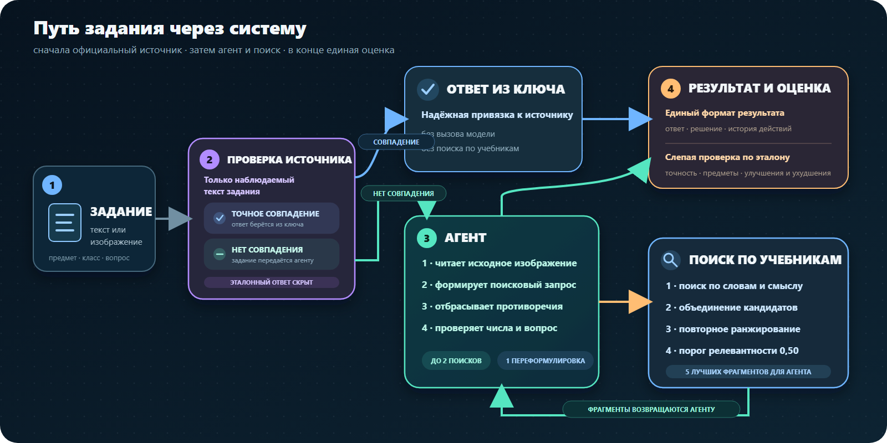

школьных заданий в сравнении без инструментов и с веб-поиском
исследование · 2026 · мультимодальные агенты
УЧЕБНИК КАК ИНСТРУМЕНТ
Проверяем, когда внешние знания помогают модели решить школьное задание, а когда поиск лишь добавляет шум.
Qwen 3.5 9B
изображение задания
поиск по учебникам
единая оценка
точность базовой модели на сопоставимых заданиях
поиск вызывался в 53% заданий, но не дал общего роста
важно выбрать источник и момент вызова, а не просто добавить инструмент
01 · ПОСТАНОВКА
НЕ ПРОСТО ПОИСК.
РЕШЕНИЕ, КОГДА ИСКАТЬ.
Визуальное условие уже может содержать всё необходимое. Агент должен отличить недостаток знаний от задачи, где требуется только аккуратное рассуждение по изображению.
Улучшает ли поиск по учебным материалам качество ответов VLM-агента по сравнению с той же моделью без retrieval или с веб-поиском?
Веб для широких фактов
Общие и редкие сведения, которых модель могла не видеть во время обучения.
Учебник для программы
Точные определения, формулировки и примеры из конкретного курса.
Поиск может мешать
В самодостаточных задачах лишний контекст отвлекает от исходного условия.
Нужна маршрутизация
Тип задания должен определять: решать самому, искать в вебе или в учебниках.
02 · ПОДХОДЫ
ОДНА МОДЕЛЬ.
РАЗНЫЕ ИСТОЧНИКИ.
Меняем только доступные инструменты и стратегию их применения. Формат задачи, ответа и оценки остаётся единым.
B0
Модель видит только задание
Это честная точка отсчёта: текст, изображение и метаданные без внешних источников.
- Источник: исходное изображение
- Сильная сторона: нет шума retrieval
- Риск: не хватает специфичных знаний
WEB
Широкий внешний контекст
Агент может искать сведения в интернете, если считает собственных знаний недостаточно.
- Источник: открытый веб
- Сильная сторона: широкий охват
- Риск: нерелевантные и неучебные источники
RAG
Проверяемый поиск по учебникам
Гибридный поиск и повторное ранжирование возвращают до пяти сильных фрагментов из корпуса.
- Источник: турецкие учебники
- Сильная сторона: знания учебной программы
- Риск: слабый чанк может увести решение
ROUTE
Источник выбирается по задаче
Точное официальное совпадение используется напрямую; иначе image-first агент решает сам или вызывает поиск.
- Источник: ключ, изображение или учебник
- Сильная сторона: меньше лишних вызовов
- Риск: ошибка маршрутизации
03 · РЕЗУЛЬТАТЫ
ПОИСК — НЕ
АВТОМАТИЧЕСКИЙ РОСТ.
Первый большой эксперимент показывает цену неправильного вызова инструмента.
Exact Match · N = 8 300
одинаковые задания
Δ
−2,4 п.п.
на сопоставимой части выборки
На задачах, где ответ нужно вывести рассуждением, веб-контекст чаще мешал.
Пользу даёт не сам доступ к поиску, а правильное решение — когда, где и что искать.
основной вывод
Веб — для внешних фактов, RAG — для знаний из учебников, сама модель — для рассуждения по условию. Главный фактор качества — не наличие поиска, а правильный выбор источника и момента его вызова.
04 · СИСТЕМА
ИЗОБРАЖЕНИЕ
ОСТАЁТСЯ ГЛАВНЫМ.
Найденный фрагмент поддерживает решение, но не заменяет условие задачи.
- 01
Прочитать задание
Извлечь текст, числа, формулы и вопрос из исходного изображения.
- 02
Выбрать источник
Решать самостоятельно либо обратиться к официальному ключу или учебникам.
- 03
Проверить контекст
Отбросить слабые и конфликтующие чанки, разрешить одну переформулировку.
- 04
Сверить ответ
Повторно проверить числа и вопрос по изображению, затем вернуть единый результат.

05 · ХОД РАБОТЫ
ОТ КОНТРАКТА
К ПРОВЕРЯЕМОМУ ВЫВОДУ.
Каждый следующий этап добавлялся только после воспроизводимой проверки предыдущего.
Форматы данных
Единые схемы задания, изображения, чанка и результата агента.
Базовая линия
Запуск одной модели без инструментов и сохранение полного trace.
Корпус и индексы
Разбор учебников, гибридный retrieval и повторное ранжирование.
Агентный инструмент
Прямой вызов поиска, ограничение запросов и проверка релевантности.
Единая оценка
Точные метрики, мультимодальный judge и предметные срезы.
Маршрутизация
Выбор между самостоятельным решением, вебом и учебником.
06 · ТЕХНОЛОГИИ
PythonQwen 3.5 9BPyTorch
FAISSBM25multilingual E5
BGE rerankerPydanticLLM judge
SQLiteVLM analyticsGitHub Pages
исследование продолжается
СМОТРЕТЬ КОД